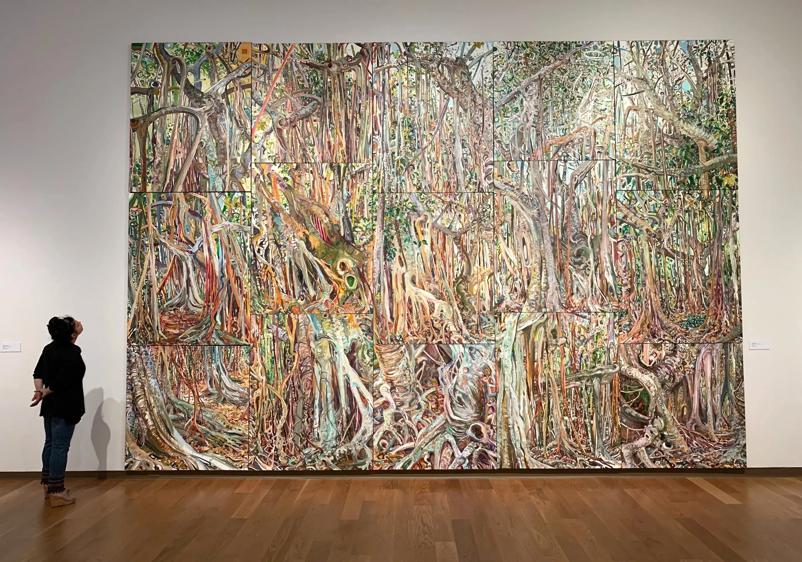
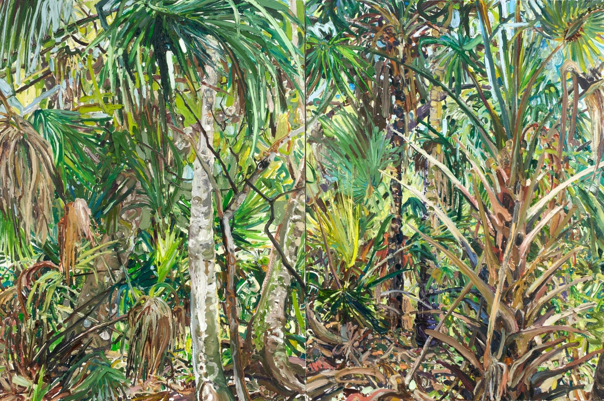
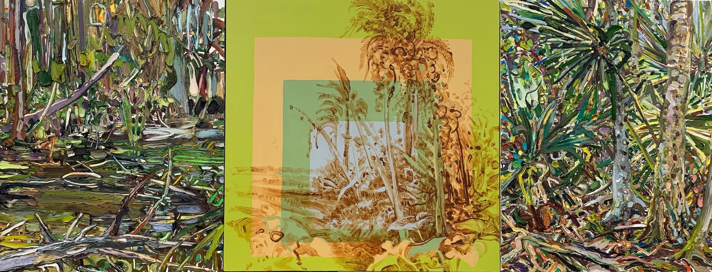
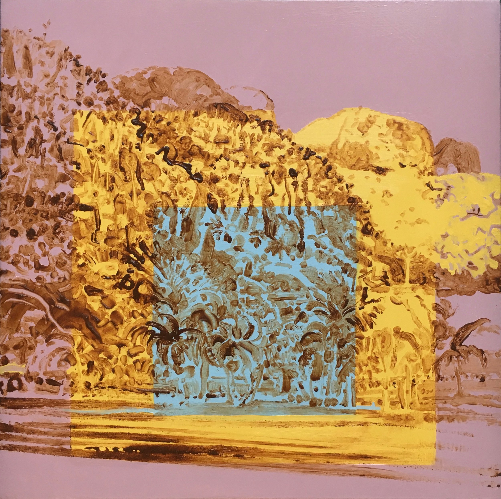
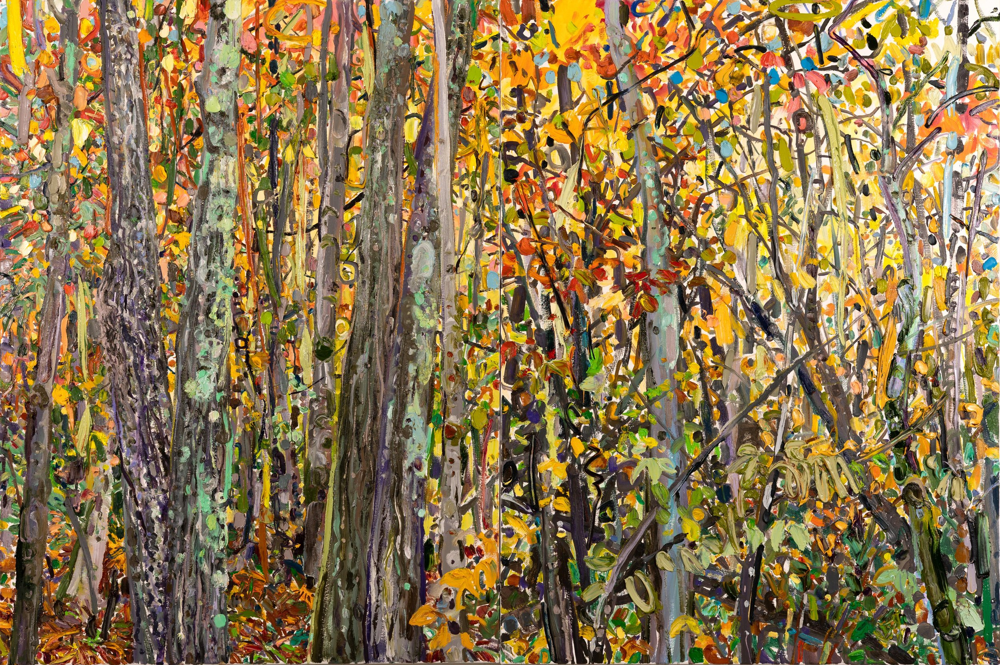
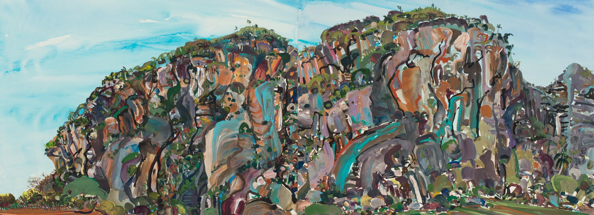
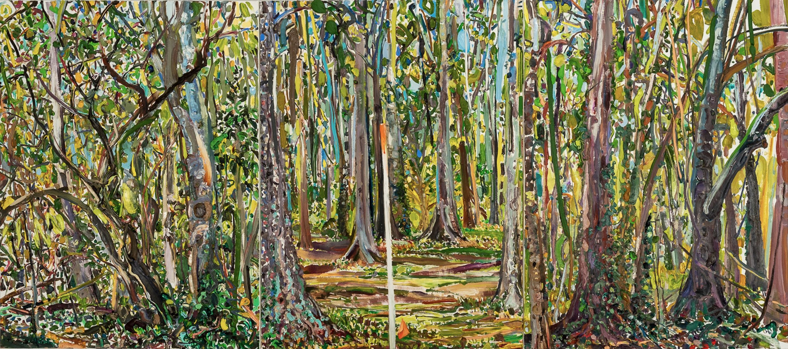
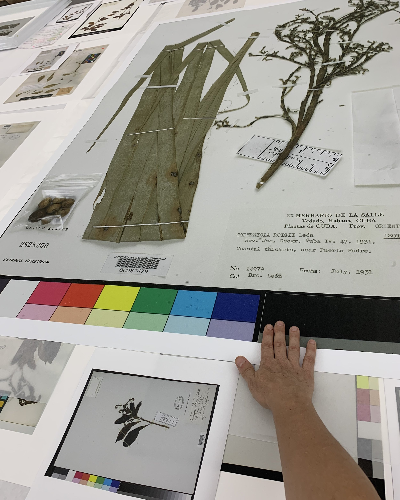
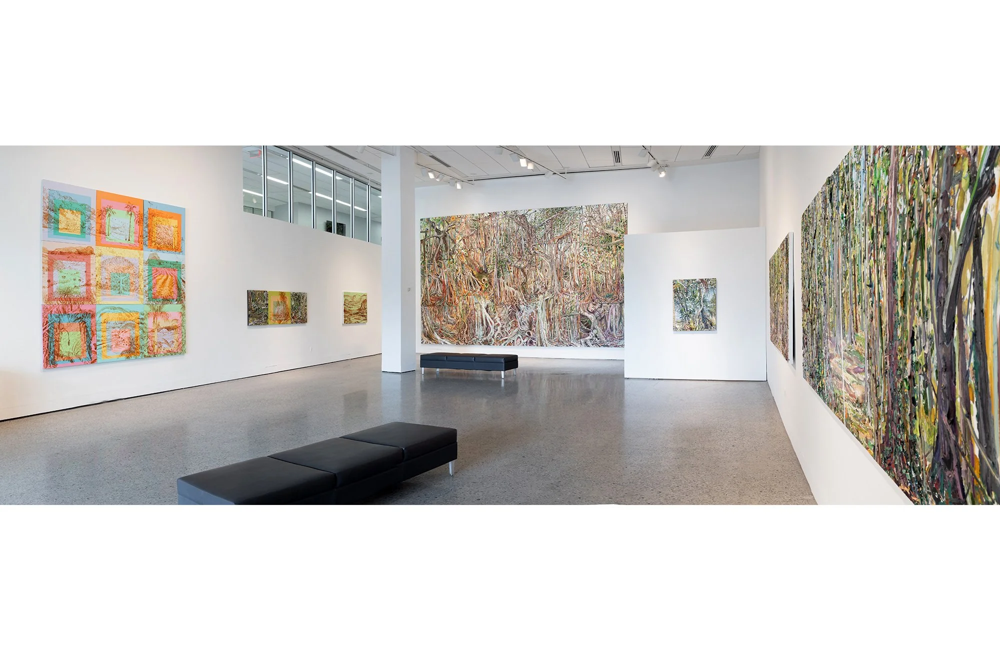

Landscape Painter · Tallahassee, FL

Selected Works

Cumulative Nature — Palm Menagerie Diptych
Hyphenated Nature
Hecho con Cuba — Homage to Viñales #9
Millay Fall Diptych
Hecho en Cuba — Mogote Diptych
Plein Aired Histories — Farmers St Cemetery
ReCollecting Roig
Legacy of PlaceAbout
"You must live in the present, launch yourself on every wave, find your eternity in each moment."
Lilian Garcia-Roig paints landscapes — not as documentation, but as inquiry. Working en plein air across Florida, Cuba, and the Hudson Valley, her paintings explore the paradox of a nature that is both intoxicatingly near and unreachable. Her Hecho con Cuba series uses pigments ground from Viñales Valley Cuban soil, embedding identity into the land itself.
Her work is held in the permanent collections of the Pérez Art Museum Miami and the Frost Art Museum, and is represented by Cernuda Arte (Coral Gables), Valley House Gallery (Dallas), and Thomas Deans Fine Art (Atlanta).
Studio
For studio inquiries, commissions, and exhibition questions:
GarciaRoigStudio@gmail.com